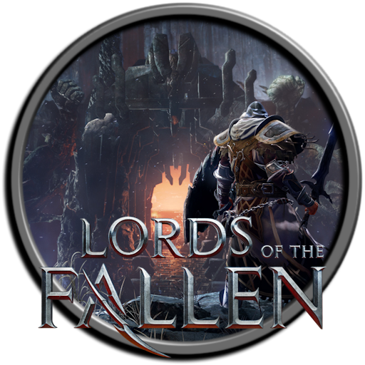

 Lords of the Fallen
Details
 |
|
| Playtime | Not Played |
| Last Activity | Never |
| Added | 4/30/2025 4:58:34 |
| Modified | 5/1/2025 23:27:13 |
| Completion Status | Not Played |
| Library | Playnite |
| Source | |
| Platform | $PC (Windows) |
| Release Date | 10/13/2023 |
| Community Score | 62 |
| Critic Score | 75 |
| User Score | |
| Genre | Role playing |
| Developer | HEXWORKS |
| Publisher | CI Games |
| Feature | 60 fps+ Dolby Atmos DTS:X HDR10 Online co-op (2-3) Online multiplayer (2-3) Optimized for Xbox Series X|S Ray Tracing Single Player Spatial Sound Xbox cross-platform co-op Xbox cross-platform multiplayer |
| Links | Xbox Store |
| Tag | |
Description
The Lords of the Fallen Deluxe Edition includes:
- GAME - A vast world awaits in the all-new, dark fantasy action-RPG
- DARK CRUSADER STARTING CLASS - set forth upon your epic journey equipped as one of the renowned Dark Crusaders, fabled for their faith and ferocity
- DARK CRUSADER ARMOUR & WEAPON SET - brandish the Dark Crusaders’ iconic ensemble, including the devastating Isaac's Longsword, Holy Light explosives, full armour set, and Paladin's Pendant
- 100 PAGE DIGITAL ARTBOOK - featuring exclusive illustrations, pore over 100 pages of beautifully horrific artwork spanning the world of Lords of the Fallen
- DIGITAL SOUNDTRACK - lose yourself to the haunting harmonies of Mournstead with the full OST, composed by the celebrated Cris Velasco and Knut Avenstroup Haugen
- 3D MODEL VIEWER - view every in-game character model in high-resolution detail
*Immediate access granted to items that otherwise can be found late game in all versions of title
Lords of the Fallen introduces an all-new, epic RPG adventure in a vast, interconnected world.
A vast world awaits in the medieval, dark fantasy action-RPG, Lords of the Fallen. As a fabled Dark Crusader, embark on an epic quest to overthrow Adyr, the demon God.
The definitive Version 2.0 out now: features Shared Progression Co-op & Free Friend’s Pass.
Explore A Vast, Interconnected World
Journey across two expansive, parallel worlds in your epic quest to overthrow Adyr. While the living realm presents its own brutal challenges, untold terrors lurk in the nightmarish realm of the dead.
Define Your Own Legend
Fully customise your character’s appearance from a wide array of visual options, before selecting one of nine character classes. Whichever starting path you take, develop your character to your own playstyle by upgrading stats, weapons, armour and spells.
Master Fast, Challenging Fluid Tactical Combat
Only those that master the deep, tactical combat can hope to survive. Choose from 100s of uniquely brutal weapons, or forgo metal for magic with devastating attacks of the arcane.
Unite or Fight in Online Multiplayer
Experience the expansive, single player campaign alone, or unite with other lampbearers in online co-op. You are free to journey together for as long as you or they desire, collecting vigor (xp) and any weapons or gear enemies drop, ready to bring them back to your own world. Key items and quest progression won't be transferred, to retain the integrity of your own tale. For those playing online, be warned, as heroes from other realms can, and will invade.
Wield a Device of Ungodly Power
Your lantern possesses the ungodly power to cross between worlds. Use this dark art to reach forgotten places, unearth fabled treasures, and even manipulate the very soul of your foe.
Rise from Death
Fall in the world of the living, and rise again… in the world of the dead. You now have one final chance to return to your living state, as all manner of hellish creature descends upon you.
Key Features:
- Journey across two vast, parallel worlds
- Fully customise your experience with the Advanced Gameplay Modifier System (immediately available)
- Master a fast, fluid and challenging combat system
- Overcome epic boss battles
- Wield devastating magic attacks and character buffs
- Adventure side by side in full ‘shared progression’; online co-op with crossplay functionality
- Play with any friend who doesn’t own the game with the Free Friend’s Pass (only host saves progress)
- Choose from 9 starting character classes, including Knight, Rogue and Fire Apprentice
- Replay any boss in ‘Echoes of Battle’ mode (accessed at any vestige)
- Face the ultimate bossrush challenge in ‘Crucible’ mode
- GAME - A vast world awaits in the all-new, dark fantasy action-RPG
- DARK CRUSADER STARTING CLASS - set forth upon your epic journey equipped as one of the renowned Dark Crusaders, fabled for their faith and ferocity
- DARK CRUSADER ARMOUR & WEAPON SET - brandish the Dark Crusaders’ iconic ensemble, including the devastating Isaac's Longsword, Holy Light explosives, full armour set, and Paladin's Pendant
- 100 PAGE DIGITAL ARTBOOK - featuring exclusive illustrations, pore over 100 pages of beautifully horrific artwork spanning the world of Lords of the Fallen
- DIGITAL SOUNDTRACK - lose yourself to the haunting harmonies of Mournstead with the full OST, composed by the celebrated Cris Velasco and Knut Avenstroup Haugen
- 3D MODEL VIEWER - view every in-game character model in high-resolution detail
*Immediate access granted to items that otherwise can be found late game in all versions of title
Lords of the Fallen introduces an all-new, epic RPG adventure in a vast, interconnected world.
A vast world awaits in the medieval, dark fantasy action-RPG, Lords of the Fallen. As a fabled Dark Crusader, embark on an epic quest to overthrow Adyr, the demon God.
The definitive Version 2.0 out now: features Shared Progression Co-op & Free Friend’s Pass.
Explore A Vast, Interconnected World
Journey across two expansive, parallel worlds in your epic quest to overthrow Adyr. While the living realm presents its own brutal challenges, untold terrors lurk in the nightmarish realm of the dead.
Define Your Own Legend
Fully customise your character’s appearance from a wide array of visual options, before selecting one of nine character classes. Whichever starting path you take, develop your character to your own playstyle by upgrading stats, weapons, armour and spells.
Master Fast, Challenging Fluid Tactical Combat
Only those that master the deep, tactical combat can hope to survive. Choose from 100s of uniquely brutal weapons, or forgo metal for magic with devastating attacks of the arcane.
Unite or Fight in Online Multiplayer
Experience the expansive, single player campaign alone, or unite with other lampbearers in online co-op. You are free to journey together for as long as you or they desire, collecting vigor (xp) and any weapons or gear enemies drop, ready to bring them back to your own world. Key items and quest progression won't be transferred, to retain the integrity of your own tale. For those playing online, be warned, as heroes from other realms can, and will invade.
Wield a Device of Ungodly Power
Your lantern possesses the ungodly power to cross between worlds. Use this dark art to reach forgotten places, unearth fabled treasures, and even manipulate the very soul of your foe.
Rise from Death
Fall in the world of the living, and rise again… in the world of the dead. You now have one final chance to return to your living state, as all manner of hellish creature descends upon you.
Key Features:
- Journey across two vast, parallel worlds
- Fully customise your experience with the Advanced Gameplay Modifier System (immediately available)
- Master a fast, fluid and challenging combat system
- Overcome epic boss battles
- Wield devastating magic attacks and character buffs
- Adventure side by side in full ‘shared progression’; online co-op with crossplay functionality
- Play with any friend who doesn’t own the game with the Free Friend’s Pass (only host saves progress)
- Choose from 9 starting character classes, including Knight, Rogue and Fire Apprentice
- Replay any boss in ‘Echoes of Battle’ mode (accessed at any vestige)
- Face the ultimate bossrush challenge in ‘Crucible’ mode